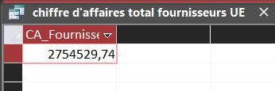

2.Quel chiffre d’affaires est généré avec les fournisseurs de l’Union européenne ?
Cet indicateur mesure le chiffre d’affaires associé aux produits fournis par des pays membres de l’UE. Il permet d’étudier la place des approvisionnements européens dans l’activité de KDou.
Calcul retenu : prix de vente estimé = coût d’achat × coefficient de marge. Le CA tient compte des quantités vendues et des remises.
Afficher la requête SQL
SELECT Sum(
D.[Quantité] * P.CoutAchat * C.CoefMarge
* (1 - D.[Remise (%)])
) AS CA_Fournisseurs_UE
FROM ((((DetailCommande AS D
INNER JOIN Produit AS P
ON D.[Réf produit] = P.RefProd)
INNER JOIN Categorie AS C
ON P.CodeCateg = C.CodeCateg)
INNER JOIN Fournisseur AS F
ON P.NoFour = F.NoFour)
INNER JOIN Pays AS Y
ON F.NoPays = Y.NoPays)
WHERE Y.UE = 'Membre';
Résultat Access : CA total des fournisseurs UE